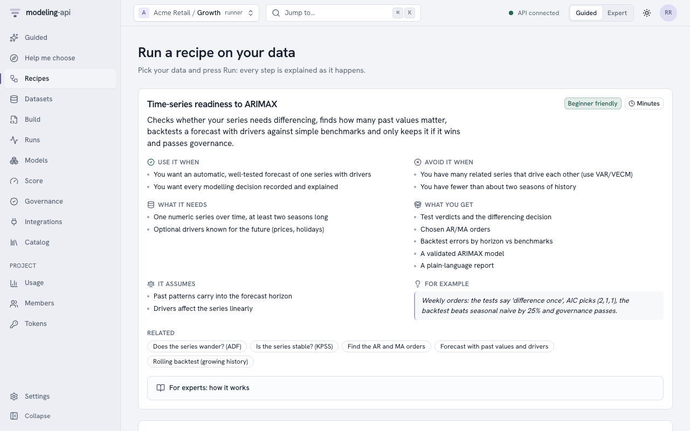
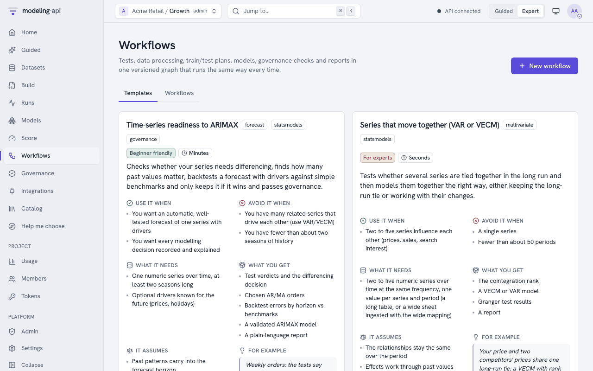
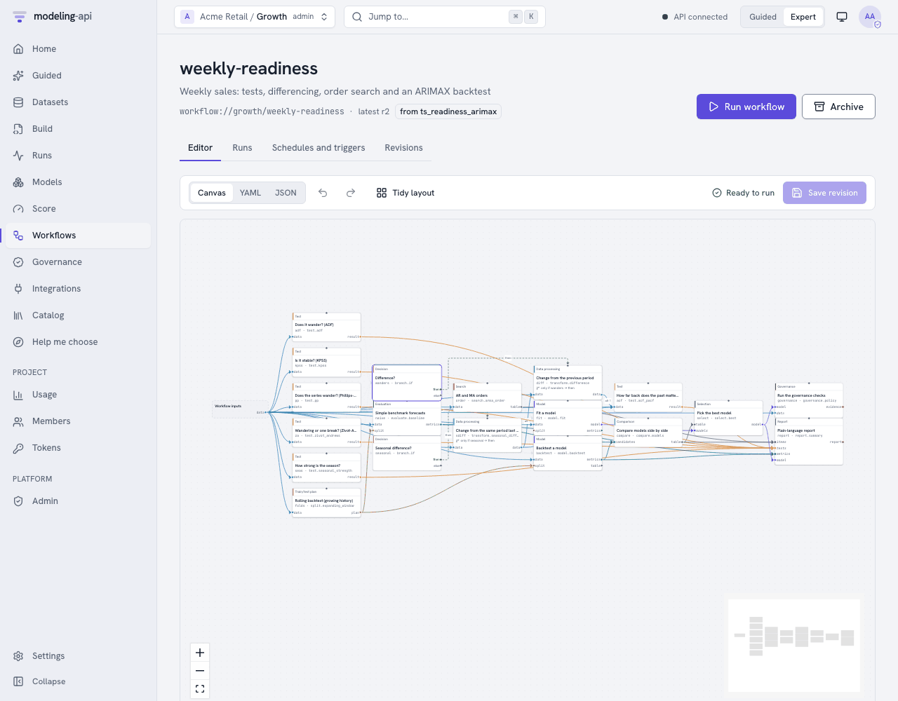
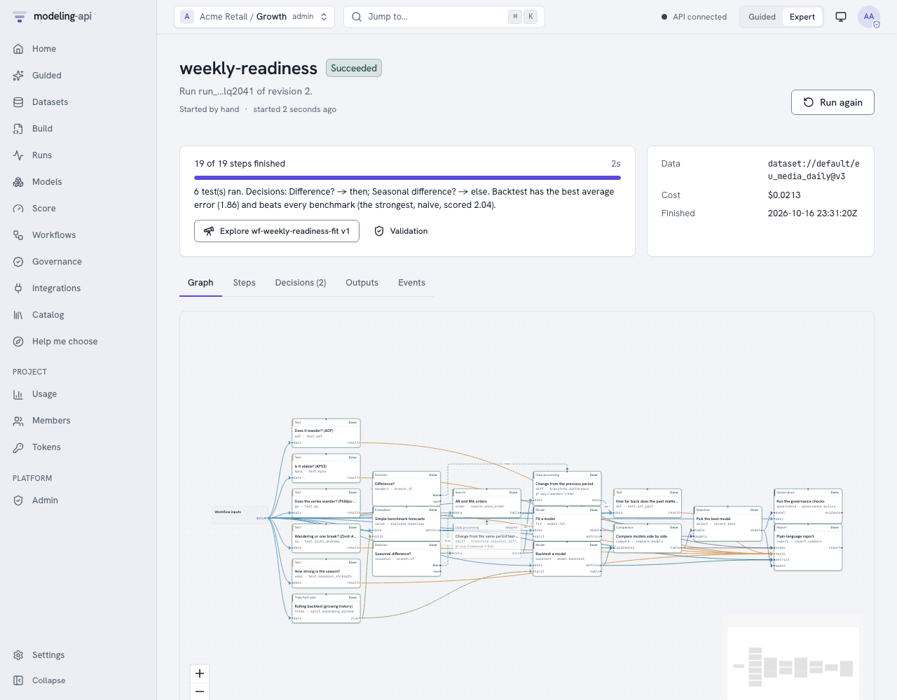
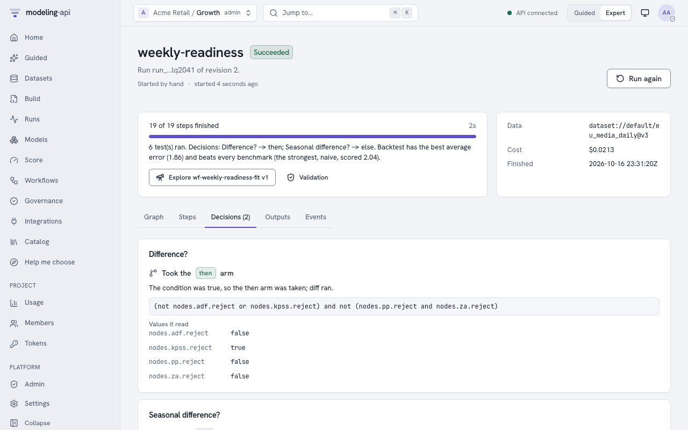
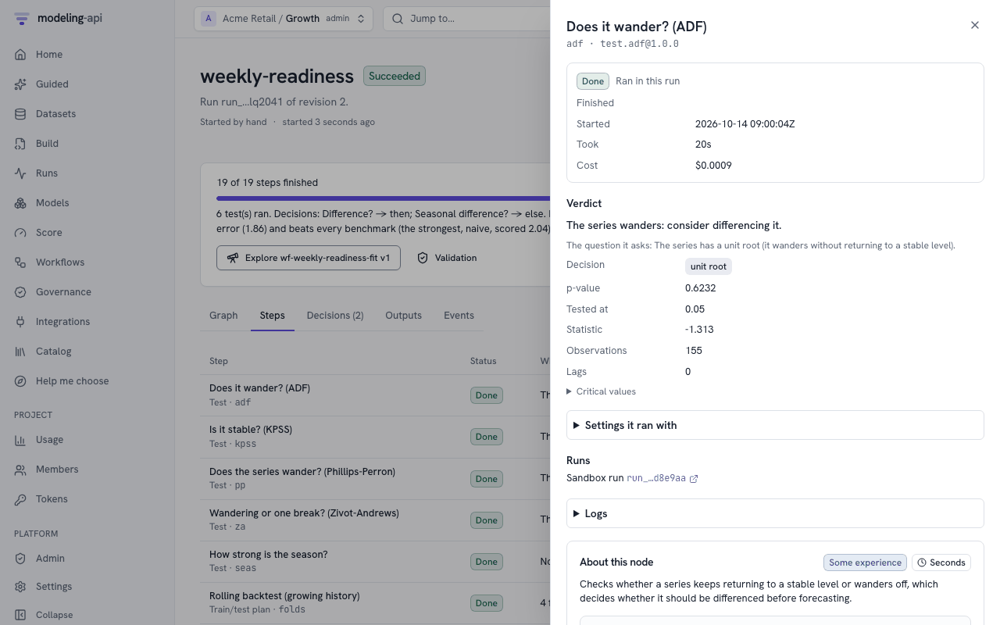
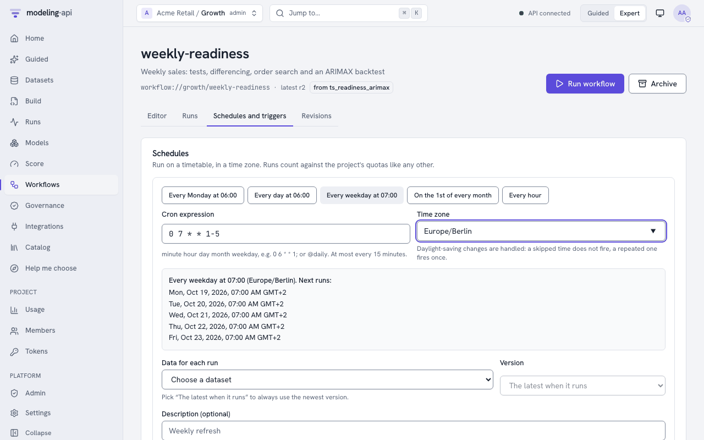

Workflows v0.5¶
A workflow connects statistical tests, data processing, train/test plans, models, governance checks and reports into one graph. The graph runs the same way each time. This guide gives the practical information:
- How to start from the gallery.
- The canonical "readiness → ARIMAX" document, line by line.
- A cookbook of patterns.
- Where each node runs.
- How to schedule runs and how to monitor them.
The Workflows concept page gives the full data about the document format, the condition language and the validation. The node reference lists all nodes with their About cards, ports, parameters and result fields.
| You want to | Go to |
|---|---|
| Run an analysis that is ready to use | Start from the gallery |
| Build, run and monitor workflows in the browser | In the web app |
| Understand the canonical example | The canonical workflow |
| Build your own workflow | Cookbook |
| Know what runs where and what it costs | Where nodes run |
| Run it automatically | Schedules and triggers |
| Try it in a notebook without a server | Run it locally |
| Copy a complete analysis that has tests | Workflow cookbook |
| Control it from Python or a terminal | api.workflows (client), mapi workflows (CLI) |
Start from the gallery¶
The gallery has ten templates. Each template has an About card in plain language
(GET /v1/workflow-templates):
| Template | Select it when |
|---|---|
ts_readiness_arimax |
You have one weekly or daily KPI and you want an ARIMAX forecast that you can defend. The tests decide the differencing. A search selects the AR and MA orders. A backtest shows that the model is better than naive forecasts. |
var_vecm_cointegration |
Some series move together (for example sales, price and distribution). You want to know if they have a long-run relation before you select a VECM or a VAR. |
mmm_governed |
You need a marketing mix model that must pass the governance policy before a person uses it. |
forecast_bakeoff |
You do not know which forecast model is correct for the data. SARIMAX, ETS, Theta and a smooth trend compete on the same folds. |
sci_spatial_ladder |
You have counts of a disease for each area of a map. You want to know if the areas share their risk with their neighbours, and if the effect of a covariate stays clear in the best model. |
sci_network_ladder |
You have the ties of a network and traits of its nodes. You want to know if the shared traits explain the ties, or if the activity of each node and a hidden map also help. |
sci_phylo_signal |
You compare a trait across species that a tree relates. You want to know if an effect stays clear when the model includes the tree. |
sci_calibrate_then_design |
You measured a heated plate in some calibration runs. You want to predict the temperature field of a new heater layout, but only if the calibration predicts a run that it did not see. |
bayes_workflow_audit |
You have a Bayesian model and you want the checks of a careful Bayesian workflow in one run: the priors, convergence, the posterior predictive check, prior sensitivity and recovery of known values. |
sci_image_model_check |
Your model predicts an image. You want to see where on the image the model goes wrong, and if the predicted images look like the observed image. |
When you make a workflow from a template, the server copies the template document into your project as revision 1. After that, the workflow is yours and you can edit it.
# create it (the name and project come from the request's project)
api POST /v1/workflows -d '{"template": "ts_readiness_arimax"}' | jq '{id, ref, latest_revision}'
# run it on the latest version of a dataset, overriding a few parameters
api POST "/v1/workflows/$WF/runs" -H "Idempotency-Key: $(uuidgen)" -d '{
"inputs": {"data": "dataset://growth/weekly_sales@latest"},
"params": {"drivers": ["price"], "n_folds": 4, "gap": 1, "horizons": [1, 4, 8]}
}' | jq '{run_id, status}'
# follow it: each node, each branch decision, then the result
api GET "/v1/workflow-runs/$RUN" | jq '.nodes[] | {node_id, status, result}'
api is the helper of the HTTP API guide. It adds the token and the project
header. To do the same from the command line, use mapi workflows create --template
ts_readiness_arimax, then mapi workflows run ts-readiness-arimax -i
data=dataset://growth/weekly_sales@latest -p 'drivers=["price"]' --watch. From Python, use
api.workflows.create(template="ts_readiness_arimax") and api.workflows.run(...). The
server resolves @latest when the run starts and records it as an exact version. Thus you
can make the run again with the same result: GET /v1/workflow-runs/{run_id} shows
dataset://growth/weekly_sales@v7.
When you start a run, the server answers 202 with the view of the run. If you start a run
with an Idempotency-Key that you used before, the server returns the first run (200). It
does not start a different run.
In the web app¶
To open the workflows of the project and the gallery, click Workflows in the sidebar (G then W). All the functions below use the same endpoints as the remaining part of this guide.
Recipes for Guided users¶
In Guided mode, the sidebar item shows Recipes, and the page opens on the recipes. The recipes are the gallery templates as About cards. Each card tells in plain words:
- What the recipe does.
- When to use it and when not to use it.
- What it needs and what it gives.
- A very small example.
Run on my data asks for a dataset. It also asks for the settings that the recipe cannot guess, but only when the recipe needs them (for example, the drivers of the marketing-mix recipe). The other settings are under Fine-tune. The first run makes the workflow of the project from the template. Subsequent runs use that workflow again. The Data Explorer of data over time shows the readiness recipe with that data already selected (Check it is ready to forecast). Then the run page shows each step in plain words when the step is complete. It also shows the decisions and the summary of the report.

Start from a template (Expert)¶
Use this template opens a wizard that has three steps:
- The About card of the template and the name of the workflow.
- The parameters. The app saves them as the defaults of the workflow. Each run can change them.
- The default data for the run. The app saves it as the default reference of the input. Schedules use it, and runs that start without data use it.
The app makes the workflow as revision 1.

The editor¶
The Editor tab of a workflow has three panes. On wide screens the panes are side by side. On narrow screens they are one above the other.

| Pane | What it does |
|---|---|
| Nodes (the palette) | Shows all nodes of GET /v1/catalog/workflow-nodes in groups by kind. Each kind and each node has its About card. You can search by name, by id or by purpose. To add a node, drag it onto the canvas. Or, select it and push Add (this is the keyboard method). |
| Canvas | Shows the graph. The color of a data edge shows the port type. If a port has alternatives, the edges have numbers (alt 1, alt 2). Dashed edges go from the then/else arm of a branch to the top edge of the nodes that the arm controls. Dotted edges show results that a condition or $expr reads. To bind an output to an input, drag from the output to the input. The canvas refuses an edge between ports of different types, a node that feeds itself and a cycle. It shows the reason above the canvas. To remove a node or an edge, select it and push Del. Each node shows the number of problems that it has. Your browser keeps the node positions, and only your browser keeps them (Tidy layout removes them). The document never keeps them. |
| Node editor | Shows the selected node: its About card, its id and label, and each input port with its type and its sources in sequence. You can add a source, change the sequence of alternatives and disconnect a source. It also shows the branch arm that controls the node (When it runs). It shows the settings: a form that the app makes from the JSON Schema of the node. Each field can also use a workflow parameter or an expression. Then it shows how the node runs: retries, time limit, failure handling and caching. A model node selects its model from the catalog, with the About card of the model. governance.check selects a check. subworkflow.run selects a saved workflow and revision. The inputs and outputs of that workflow become the ports of the node. If you select no node, the pane edits the description, parameters, inputs, outputs and run limits of the workflow. |
A branch node has a condition editor. Write the condition. Insert results of upstream
nodes (nodes.adf.reject) or parameters from the list. The server does a check of the
condition while you type (POST /v1/workflows:validate, with the issue at
/nodes/<i>/with/condition). The browser never calculates a condition.
YAML and JSON show the same document in the code editor. Markers show the problems that the server found. When the text is a correct workflow, an edit there updates the canvas immediately. Until then, the canvas keeps the last version that it could read and tells why. The app does a check of each change immediately. The status shows Ready to run or N problems. The Problems list goes to the node of each problem.
Undo and redo operate across all three views. Save revision (Cmd+S) saves the next revision with a message. The app also saves a revision that has problems, but that revision cannot run. If a different person saved a newer revision in the meantime, the app refuses the save and keeps your draft. Revisions lists all revisions with their verdicts. You can open a revision in the editor or compare two revisions side by side.
Running and watching¶
Run workflow binds the inputs. An input is a dataset from the project: the latest version
at the time of the run, or an exact version. You can change the parameters for this run only.
The app starts the run with an Idempotency-Key. The run page follows
GET /v1/workflow-runs/{run_id}/events live. If the connection stops, the page continues
with Last-Event-ID. The run page has these tabs:
- Graph: the canvas with the status of each node (waiting, queued, running, done, reused, skipped, failed, cancelled).
- Steps: each node in plain words. It shows the verdict and the meaning of a decision ("The tests found that the series wanders ..., so it was differenced"). It also shows why the run did not need a node, and how long the node took. A comparison or a selection identifies its candidates by their step labels ("ARIMAX").
- Decisions: the plain explanation of each branch and the steps that it ran or skipped. It also shows the verdicts of the earlier steps that it read ("What decided it"). Under For experts: the condition, it shows the expression and the values that it read. This section is open in Expert mode and closed in a Guided recipe.
- Outputs and Events: the outputs of the run (the app shows the report) and the event log.


To open the drawer of a step, select the step. The drawer shows:
- If the step ran or used an earlier result again. If it used an earlier result, a link goes to the run that made that result.
- The test verdict: the statistic, the p-value and the decision. For panels, it shows them for each series.
- The outputs: tables, scores, train/test folds, reports, governance evidence, charts in the plot sandbox, and a download for file outputs (for example, derived datasets).
- The settings of the step.
- Its sandbox run, its fits or its child workflow runs, with their logs.
- Its cost.
Cancel run stops a workflow that runs and its children. When the run stops, the app shows the cost of the run.

You can open a model that the run fitted in the Model Explorer. The link Explore name vN is in these locations:
- Below the summary of the run, when the run is successful.
- Next to the runs of the fit step.
- On each
model_versionoutput.
The link has a Validation link to the validations of that version. The lineage in the Model Explorer has a link back to this run.
Schedules and triggers in the app¶
Schedules and triggers adds a schedule from presets or from a cron expression, in a time zone. It shows the next five run times exactly as the server calculates them. It skips daylight-saving gaps, and it fires repeated times only once. If an expression fires more frequently than each 15 minutes, the app refuses it before it sends it. You can pause and delete schedules. A trigger runs the workflow each time a selected dataset gets a new version. The trigger binds the dataset to one of the dataset inputs and runs after a debounce.

The canonical workflow¶
This is the ts_readiness_arimax template exactly as the server keeps it. The docs build
makes sure that the two are identical:
# The canonical workflow: time-series readiness -> ARIMAX (template ts_readiness_arimax).
# Kept identical to mapi_spec.workflow_templates.TS_READINESS_ARIMAX by a test.
apiVersion: mapi/v1
kind: Workflow
metadata: {name: ts-readiness-arimax, project: templates}
params:
alpha: {type: number, default: 0.05, minimum: 0.001, maximum: 0.2, description: The significance level of the tests}
season: {type: integer, default: 52, minimum: 2, maximum: 400, description: The length of a season in periods (52 for weekly data)}
horizons:
type: array
default: [1, 4, 8]
description: The forecast horizons that the backtest scores
gap: {type: integer, default: 0, minimum: 0, maximum: 52, description: The periods between the training data and the test data (for late data)}
n_folds: {type: integer, default: 6, minimum: 2, maximum: 50}
max_p: {type: integer, default: 3, minimum: 0, maximum: 8}
max_q: {type: integer, default: 3, minimum: 0, maximum: 8}
drivers:
type: array
default: []
description: The driver columns that you know for the future
inputs:
data: {type: dataset, description: The weekly (or daily) series to model}
nodes:
# 1. the seasonal difference first (as nsdiffs before ndiffs) ...
- id: seas
use: test.seasonal_strength
inputs: {data: inputs.data}
with:
period: {$param: season}
- id: seasonal
use: branch.if
label: Seasonal difference?
with:
condition: nodes.seas.seasonal
explain_then: The series has a strong seasonal pattern. The workflow compared each value with the same period one season earlier (a seasonal difference).
explain_else: The series has no strong seasonal pattern, so the workflow did not apply a seasonal difference.
- id: sdiff
use: transform.seasonal_difference
inputs: {data: inputs.data}
when: seasonal.then
with:
period: {$param: season}
# 2. ... then the unit-root tests on the seasonally differenced series
- id: adf
use: test.adf
inputs:
data: [sdiff.data, inputs.data]
with:
alpha: {$param: alpha}
label: Does it wander? (ADF)
- id: kpss
use: test.kpss
inputs:
data: [sdiff.data, inputs.data]
with:
alpha: {$param: alpha}
label: Is it stable? (KPSS)
- id: pp
use: test.pp
inputs:
data: [sdiff.data, inputs.data]
with:
alpha: {$param: alpha}
- id: za
use: test.zivot_andrews
inputs:
data: [sdiff.data, inputs.data]
with:
alpha: {$param: alpha}
# over-differencing guard: a first difference whose lag-1 autocorrelation is below -0.5
# removed a unit root that was not there
- id: cand
use: transform.difference
inputs:
data: [sdiff.data, inputs.data]
label: Trial difference
- id: overdiff
use: test.acf_pacf
inputs: {data: cand.data}
with: {nlags: 4, max_order: 1}
label: Too many differences?
- id: wanders
use: branch.if
label: Difference?
with:
condition: (not nodes.adf.reject or nodes.kpss.reject) and not (nodes.pp.reject and nodes.za.reject) and nodes.overdiff.acf[1] > -0.5
# plain words for the run report and the run monitor
explain_then: The tests found that the series wanders and does not return to a steady level. The workflow applied a difference, so the model uses the change from one period to the next.
explain_else: The tests found that the series returns to a steady level, or that a difference would go too far. The workflow used the series as it is.
- id: diff
use: transform.difference
inputs:
data: [sdiff.data, inputs.data]
when: wanders.then
- id: acf
use: test.acf_pacf
inputs:
data: [diff.data, sdiff.data, inputs.data]
with:
max_order: {$param: max_p}
# the orders of the model that is fitted (same d and D), searched before the backtest's
# first test window
- id: order
use: search.arma_order
inputs: {data: inputs.data, split: folds.plan}
with:
d: {$expr: 'if(nodes.wanders.value, 1, 0)'}
D: {$expr: 'if(nodes.seasonal.value, 1, 0)'}
period: {$param: season}
max_p: {$param: max_p}
max_q: {$param: max_q}
exog: {$param: drivers}
criterion: aic
label: AR and MA orders
- id: folds
use: split.expanding_window
inputs: {data: inputs.data}
with:
horizons: {$param: horizons}
gap: {$param: gap}
n_folds: {$param: n_folds}
step: 4
- id: backtest
use: model.backtest
label: ARIMAX
inputs: {data: inputs.data, split: folds.plan}
with:
model: ts.sarimax@^1
settings:
order: {$expr: '[nodes.order.best_p, if(nodes.wanders.value, 1, 0), nodes.order.best_q]'}
seasonal_order: {$expr: '[0, if(nodes.seasonal.value, 1, 0), 0, params.season]'}
exog: {$param: drivers}
metrics: [mae, rmse, mape, mase]
- id: naive
use: evaluate.baseline
label: Naive forecast
inputs: {data: inputs.data, split: folds.plan}
with:
methods: [naive, seasonal_naive]
season: {$param: season}
- id: compare
use: compare.models
inputs:
candidates: [backtest.metrics, naive.metrics]
with: {metric: mae}
- id: fit
use: model.fit
inputs: {data: inputs.data}
with:
model: ts.sarimax@^1
settings:
order: {$expr: '[nodes.order.best_p, if(nodes.wanders.value, 1, 0), nodes.order.best_q]'}
seasonal_order: {$expr: '[0, if(nodes.seasonal.value, 1, 0), 0, params.season]'}
exog: {$param: drivers}
evaluate:
metrics: [mape, coverage_90]
- id: select
use: select.best
inputs:
table: compare.table
models: [fit.model]
with:
metric: mae
must_beat: [naive]
margin: 0.0
- id: governance
use: governance.policy
inputs: {model: select.model, data: inputs.data}
- id: report
use: report.summary
inputs:
tests: [adf.result, kpss.result, pp.result, za.result, seas.result, acf.result]
metrics: [backtest.metrics, naive.metrics]
items: [order.table, compare.table]
model: select.model
with: {title: Time-series readiness and ARIMAX}
outputs: {model: select.model, report: report.report, evidence: governance.evidence}
This list explains the document from the top:
params- All values that a user can change for each run. Each value has a type, a default and
limits. If a run sends
{"alpha": "x"}, the server refuses it with422and the pointer/params/alpha. The server also refuses a number that is more than 1e15 or less than -1e15, because conditions and$exprcalculate with parameters. seas,seasonalandsdiff- The seasonal decision is first (as
nsdiffsis beforendiffs). The seasonal strength of the raw series decides if the workflow takes a seasonal difference. The seasonal difference runs only on thethenarm ofseasonal. If the workflow does not take the arm, the node is skipped. It is not failed. adf,kpss,pp,za- Four unit-root tests on the seasonally differenced series. If there is no seasonal
difference, the tests use the raw series.
data: [sdiff.data, inputs.data]is a list of alternatives: the workflow uses the first node that ran. A test of the raw levels of a seasonal series finds the seasonal unit root. Thus it adds a first difference on top of the seasonal difference, and the series gets too much differencing. The null hypothesis of ADF and Phillips-Perron is "the series wanders". The null hypothesis of KPSS is "the series is stable", so its decision labels go in the opposite direction. Zivot-Andrews accepts one structural break. Each test returns aStatTestResultwith averdict_plainsentence. candandoverdiff- A guard against too much differencing: a trial first difference and its autocorrelations. If the lag-1 autocorrelation is less than -0.5 after differencing, it shows a unit root that does not exist.
wanders(branch.if)(not nodes.adf.reject or nodes.kpss.reject) and not (nodes.pp.reject and nodes.za.reject) and nodes.overdiff.acf[1] > -0.5means this: difference the series unless the evidence for stationarity is clear. Never difference when differencing gives too much differencing. The safe expression language parses the condition (it never useseval). The run records which values it read, so you can audit the decision later.diff- The first difference of the same alternatives, on the
thenarm ofwanders.acfuses three alternatives, so it always uses the series that has the most processing. order(search.arma_order)- A grid of information criteria over AR orders
0..max_pand MA orders0..max_q.dandDgive the differencing decisions to the search. Thus the search scores exactly the model that the workflow fits: ARIMA(p, d, q)(0, D, 0) with the season length, on the raw series. Thesplitport has the plan of the backtest. With this plan, the search uses only the periods before the first test window. Thus the backtest stays out of sample. folds(split.expanding_window)- An expanding-window plan. It has
n_foldsorigins, withstep: 4periods between them. It has agapbetween the training and the test, for data that arrives late. It scores each horizon inhorizonsseparately. The server calculates the folds from the number of periods only. backtestandnaive- The workflow fits the ARIMAX model again on each fold. It also makes naive and
seasonal-naive forecasts on the same folds.
$exprmakes thesettingsfrom upstream results. compare,fit,selectcompare.modelsputs the candidates in sequence by MAE.select.bestkeeps the fitted ARIMAX only if it is better than each benchmark inmust_beat(herenaive) by at leastmargin. If not, the workflow stops with a plain explanation (reason_plain).governance- Runs the governance policy that applies to the project and makes an evidence record. The
policy includes null tests, residual checks, stability and other checks (see
Governance). The result shows
passedand listsfailed_checks. The report shows the two. The gate recipe stops a workflow on a failure. reportandoutputs- A
mapi.report/v1document with a section for each test, decision, table and metric.outputsgives the names of the values that the run returns. A parent workflow can read these values.
Cookbook¶
Each recipe is a part of nodes:. Paste it into a document that declares
inputs: {data: {type: dataset}}. Before you save, validate the document with
POST /v1/workflows:validate. The server returns each problem with a JSON pointer.
Difference only when the tests say so¶
- {id: adf, use: test.adf, inputs: {data: inputs.data}}
- {id: kpss, use: test.kpss, inputs: {data: inputs.data}}
- id: wanders
use: branch.if
with:
condition: "not nodes.adf.reject or nodes.kpss.reject"
# optional: what each path means, for the run report and the run monitor
explain_then: The tests found that the series wanders, so it was differenced.
explain_else: The tests found that the series is steady, so it was used as it is.
- {id: diff, use: transform.difference, inputs: {data: inputs.data}, when: wanders.then}
# downstream nodes take the differenced series if it exists, else the original
- {id: lb, use: test.ljung_box, inputs: {data: [diff.data, inputs.data]}}
The run records explain_then and explain_else (each has a maximum of 300 characters)
with the decision (BranchDecision.explain_plain). They are the first part of the summary of
the report. Without them, the summary shows "Difference? yes". The gallery templates set the
two values.
If a node needs diff.data without an alternative, the workflow skips that node together
with diff. To run a node only when the workflow did not change the series, add
when: wanders.else to the node.
Pick AR and MA terms¶
- {id: acf, use: test.acf_pacf, inputs: {data: [diff.data, inputs.data]}, with: {max_order: 4}}
- id: order
use: search.arma_order
inputs: {data: inputs.data}
with: {d: {$expr: "if(nodes.wanders.value, 1, 0)"}, max_p: 4, max_q: 4, criterion: bic}
- id: fit
use: model.fit
inputs: {data: inputs.data}
with:
model: ts.sarimax@^1
settings:
order: {$expr: "[nodes.order.best_p, if(nodes.wanders.value, 1, 0), nodes.order.best_q]"}
acf gives possible orders from the significant autocorrelations (suggested_p,
suggested_q). Its result is fast to read. search.arma_order fits each candidate, and the
model must use its result. search.sarima_order adds seasonal orders.
search.var_lag_order selects the lag length of a VAR. search.coint_rank selects the
cointegration rank of a VECM.
Honest train/test plans¶
# 6 expanding folds, 2 periods between training and test, horizons 1, 4 and 13
- id: folds
use: split.expanding_window
inputs: {data: inputs.data}
with: {n_folds: 6, step: 4, gap: 2, horizons: [1, 4, 13]}
# tune on the inner folds of each outer training window, score on the outer test windows
- id: nested
use: split.nested
inputs: {data: inputs.data}
with:
outer: {kind: expanding_window, n_folds: 4, horizons: [4]}
inner: {kind: rolling_origin, n_folds: 3, window: 52, horizons: [4]}
# hold out whole markets (MMM, geo experiments)
- {id: geo, use: split.geo_holdout, inputs: {data: inputs.data}, with: {n: 2, seed: 7}}
split.blocked_kfold and split.purged_kfold cut continuous blocks (with a purge gap) for
models that do not forecast. A plan is a split_plan value. Give the same plan to each
model.backtest, evaluate.baseline and search.grid node that you want to compare.
If search.grid gets a split.nested plan, it does nested cross-validation. Each outer fold
selects its grid point on its own inner folds. The node fits that point again on the outer
training window and scores it on the outer test window. best_score is the score of those
outer forecasts (the honest error of the tuned model). outer_scores and
selected_per_fold show each fold. best_settings is the point that the outer folds
selected most frequently. model.backtest on a nested plan scores its outer folds.
Beat the benchmarks, or stop¶
- {id: naive, use: evaluate.baseline, inputs: {data: inputs.data, split: folds.plan},
with: {methods: [naive, seasonal_naive, drift], season: 52}}
- {id: bt, use: model.backtest, inputs: {data: inputs.data, split: folds.plan},
with: {model: ts.sarimax@^1, settings: {order: [1, 1, 1]}}}
- {id: compare, use: compare.models, inputs: {candidates: [bt.metrics, naive.metrics]},
with: {metric: mase}}
- {id: dm, use: compare.diebold_mariano, inputs: {a: bt.metrics, b: naive.metrics},
with: {loss: squared, horizon: 4}}
- {id: fit, use: model.fit, inputs: {data: inputs.data},
with: {model: ts.sarimax@^1, settings: {order: [1, 1, 1]}}}
- {id: select, use: select.best, inputs: {table: compare.table, models: [fit.model]},
with: {metric: mase, must_beat: [naive, seasonal_naive], margin: 0.05}}
compare.diebold_mariano tests if the difference in forecast errors is more than chance. It
uses the Harvey-Leybourne-Newbold small-sample correction. If there is no single winner,
select.threshold keeps the rows of a comparison table that are in the limits (max,
min).
Long-run relationships: VECM or VAR¶
- {id: joh, use: test.johansen, inputs: {data: inputs.data}}
- {id: tied, use: branch.if,
with: {condition: "nodes.joh.rank > 0 and nodes.joh.rank < len(nodes.joh.trace_stats)"}}
- {id: vecm, use: model.fit, inputs: {data: inputs.data}, when: tied.then,
with: {model: ts.vecm@^1, settings: {coint_rank: {$expr: "nodes.joh.rank"}}}}
- {id: stable, use: branch.if, when: tied.else,
with: {condition: "nodes.joh.rank >= len(nodes.joh.trace_stats)"}}
- {id: d, use: transform.difference, inputs: {data: inputs.data}, when: stable.else}
- {id: lags, use: search.var_lag_order, inputs: {data: [d.data, inputs.data]}, when: tied.else}
- {id: var, use: model.fit, inputs: {data: [d.data, inputs.data]}, when: tied.else,
with: {model: ts.var@^1, settings: {lags: {$expr: "nodes.lags.best_lag"}}}}
If the Johansen rank is equal to the number of series, each series is already stable (for
example, growth rates or changes). Then there is no error to correct, and ts.vecm refuses
that rank. Thus the workflow fits the VAR on the levels. Rank 0 means separate random walks.
Then the workflow fits the VAR on the changes. A VAR that is fitted on the output of
transform.difference forecasts the changes, not the levels. It cannot update its forecast
with actuals, because the endpoint does not difference the data that you send. The model has
the label mapi.io/data-space: transformed, the server refuses actuals, and each answer
shows a warning (Forecasts with actuals).
The data keeps the series along one dimension, with one value for each series and period
(value(series, quarter)). This is the layout of the statsmodels multivariate models. To
ingest a wide sheet, use the wide mapping. The tests and searches use all series of that
dimension, or the series in vars (labels such as [sales, price]). The model nodes bind
the variable dimension of the models to it. The var_vecm_cointegration template is the
complete version, with Granger tests and a report.
Search model settings on a plan¶
- id: grid
use: search.grid
inputs: {data: inputs.data, split: folds.plan}
with:
model: ts.sarimax@^1
settings: {order: [1, 1, 1]}
grid: {"/order/0": [0, 1, 2], "/order/2": [0, 1, 2]} # JSON pointers into settings
metric: rmse
max_points: 9
The node does a backtest of each grid point on the plan. best is the winning settings,
fitted again on all the data (best_settings, best_score in the result). If a grid has
more points than max_points, the node fails (WORKFLOW_INVALID) before it fits a point.
Gate on governance and keep the evidence¶
- {id: gov, use: governance.policy, inputs: {model: select.model, data: inputs.data},
with: {submit: true}}
- {id: approved, use: branch.if, with: {condition: "nodes.gov.passed"}}
- {id: pack, use: report.evidence_pack, inputs: {model: select.model, evidence: gov.evidence},
when: approved.then}
governance.policy records the result of each check of the policy that applies (or of the
policy in policy) as evidence. It does not fail when a check fails, so it also keeps the
evidence of a rejected model. Because of the branch, all nodes after it depend on the
verdict. governance.check runs one check with its own thresholds. This is useful while you
design a policy.
The checks are the implementations of the platform. They are the same as the checks of a validation request. The node measures them in its sandbox, on the model and its data. The policy that applies is the policy that the project or tenant set for the model family. The default policies of the platform apply until you add your own policies.
If submit: true is set and the model passes, the server records a validation of that model
version. The status is validated, or awaiting_approval if the policy needs a reviewer
(see governance). The policy of a node only adds to the policies that
apply. The tenant floor and the policies of the project always apply. The server records the
validation as submitted by the person who started the run, or by the person who made its
schedule or trigger. Thus that person cannot approve it. The server never caches governance
nodes: the checks run again on each run.
Reuse a workflow as a node¶
# workflow "readiness" declares outputs: {stationary: wanders.result, report: report.report}
- id: ready
use: subworkflow.run
inputs: {data: inputs.data}
with: {workflow: "workflow://growth/readiness@r3", params: {alpha: 0.01}}
- {id: summary, use: report.summary, inputs: {items: [ready.report]}}
The child runs as a separate workflow run (trigger: parent). It has its own page, and it
stops when the server cancels its parent. Its ports are the outputs of the child. Pin a
revision (@r3). Then a subsequent edit of the child does not change the parent without
notice. You can also use @latest. If a workflow runs itself, directly or through a
different workflow, it fails with WORKFLOW_INVALID. Sub-workflows can go a maximum of 8
levels deep.
Check and weigh Bayesian models¶
# fit_a and fit_b are model.fit nodes of two model variants on the same data, each with
# evaluate: {metrics: [elpd_loo]}
- {id: weights, use: compare.stacking, inputs: {candidates: [fit_a.metrics, fit_b.metrics]}}
- {id: s, use: model.summary, inputs: {model: fit_b.model},
with: {vars: [beta, sigma], hdi_prob: 0.9}}
- {id: ppc, use: evaluate.ppc, inputs: {model: fit_b.model},
with: {statistic: sd, n_draws: 400}}
- {id: robust, use: branch.if,
with: {condition: "nodes.s.params['beta[0]'].hdi_low > 0 and nodes.s.max_rhat < 1.01 and nodes.ppc.ok"}}
- {id: report, use: report.summary, when: robust.then,
inputs: {items: [weights.table, s.table], metrics: [ppc.metrics]}}
These three nodes need a Bayesian model, that is a model that gives draws. For a model
that gives only point estimates, they fail with CAPABILITY_UNSUPPORTED.
model.summary gives the mean, the sd, the HDI bounds (hdi_low, hdi_high), R-hat
and the bulk effective sample size (ess_bulk) of each parameter in vars. If vars is
empty, it uses all the parameters. The node gives each element of a vector parameter as a
separate entry, with the labels of its dimensions in brackets (beta[north], or
gamma[north, 2024] for two dimensions). Conditions read an entry with brackets and quotes:
nodes.s.params['beta[north]'].hdi_low. A scalar parameter also has a short form:
nodes.s.params.sigma.mean. The result also gives max_rhat, min_ess and n_divergent
(null if the model does not record divergences). Thus you can stop a workflow when the
sampler did not converge. The node gives a maximum of 200 entries. If there are more, it
sets truncated and shows a warning. max_rhat and min_ess always check all the values
of the variables in vars (a maximum of 20 000), also the values that the table does not
keep. Above 20 000 values, the node shows a warning.
A condition cannot build the name of an entry from a parameter. To branch on a value that a
parameter names, set focus to the name of the entry (beta[north]) or only to its label
(north). The label must belong to only one variable in vars. The result field focus
then gives the name, mean, sd, hdi_low and hdi_high of that value. It also gives
p_positive (the share of draws above zero) and excludes_zero (true if the HDI does not
include zero). A condition reads it as nodes.s.focus.excludes_zero. The
sci_phylo_signal recipe uses it.
evaluate.ppc simulates new data from the model on its fit data (the predict score
mode with predictive draws) and compares the simulated data with the observed target:
| Result | Meaning |
|---|---|
coverage_50, coverage_90 |
The share of observed values in the central 50% and 90% range of their simulated values |
pit_ks |
The distance between the PIT values and a uniform distribution (0 is best) |
p_values |
For each target, P(T(simulated) ≥ T(observed)) for the statistic T in statistic (mean, sd, max or min) |
ok |
True if each coverage is in coverage_tolerance (0.1) of its level, the p-value is between p_min and 1 - p_min (0.025), and pit_ks is less than pit_ks_max (default 1.36 / √n) |
The check uses the data that the model learned from. Thus a model that is too flexible can
pass. Use a holdout and evaluate.metrics to measure the accuracy on new data. The
metrics output contains the coverages, pit_ks and ppc_p_<statistic>, so
compare.models can compare them.
compare.stacking gives each candidate a weight. A mix of the candidates with these
weights gives the best leave-one-out predictions (stacking, Yao and others 2018). Each
candidate must come from a model.fit node with evaluate: {metrics: [elpd_loo]} (or
elpd_waic with metric: elpd_waic). That fit keeps the elpd value of each data point
(for a maximum of 10 000 points). The result gives weights (they add up to 1), best (the
candidate with the largest weight) and pseudo_bma (the pseudo-BMA+ weights from a
Bayesian bootstrap). Set method: pseudo_bma_plus to use the pseudo-BMA+ weights as
weights. If a candidate has no values for each point (more than 10 000 points), or the
candidates have different numbers of points, the node cannot do stacking. Then it gives
pseudo-BMA weights from elpd and its standard error, method is pseudo_bma_se, and
note_plain and a warning tell you why. All candidates must use the same data points in the
same order. The node cannot find a difference in order.
Score a model and draw plots¶
- id: sims
use: model.score
inputs: {model: fit0.model}
with: {mode: predict} # predict, simulate, forecast or counterfactual
- id: fan
use: plot.render
label: Fit and forecast
inputs: {data: sims.scores}
with: {recipe: core.ppc_fan, settings: {levels: [0.5, 0.9]}}
- id: fitted
use: plot.render
inputs: {model: fit0.model}
with: {recipe: core.fit_vs_actual, source: predictions}
- id: fc
use: model.forecast
inputs: {model: fit0.model}
with: {horizon: 8}
- id: report
use: report.summary
inputs: {tests: [adf.result], plots: [fan.plot, fitted.plot, fc.plot]}
model.score runs a score mode of the model, the same as a score run. request gives the
other fields of the score request (horizon, output, select, interventions, seed,
future_covariates). Without data, the node scores the fit data. For a forecast, data
gives the future drivers, and the default horizon is 12 periods. The scores output is a
dataset: the draws if the model gives draws, else the summary (statistics along a stat
dimension). To get a different group of the score result, set group (for example
predictions). Result fields: mode, n_vars, group and representation. If the model
cannot do the mode, the node fails with CAPABILITY_UNSUPPORTED.
plot.render draws a recipe of the plot catalog. Put the id in
recipe (core.ppc_fan or core.ppc_fan@^1), and the settings of the recipe in settings.
All recipe ids of the catalog work, plugin recipes too. The node needs a model or a data
input, or both. With source: auto (the default), it tries these inputs in this sequence:
- The dataset on
data(for example thescoresofmodel.score). - The bundle of the model on
model(posterior draws, observed data). - The in-sample predictions of the model, with the observed target as
observed_data.
Set source to data, model or predictions to use only one of them. The result fields
are recipe (the id and version that drew the plot), kind (vega-lite or plotly),
source and bytes. If no input has the data that the recipe needs, the node fails with
SCHEMA_INVALID, and the reason of each input is in the error. The validation of the
workflow finds an unknown recipe id (REF_UNRESOLVED on /nodes/<i>/with/recipe). The
recipe checks its settings only when the node runs. A plot that is larger than 1 MiB fails with PAYLOAD_TOO_LARGE: use
fewer draws, panels or frames in the settings of the recipe.
model.forecast also draws its fan chart (core.ppc_fan) on its plot output.
evaluate.residuals draws the errors over time (core.residuals_over_time). If these plots
cannot be drawn, the node gives a warning and has no plot output. Its other outputs do not
change.
report.summary adds a plot section for each plot on its plots port. The section
contains the plot (plot) and its caption (text). Only the JSON report and the web run
view show these sections. The HTML report does not show them. A plot that is larger than 256 KB, or
plots after the first 1 MiB of plots, stay in the node output. Then the section tells which
node has the plot. The run view in the web app shows the plots of the nodes and of the
report.
A plot output is a PlotSpec document with its datasets in the document (inline_arrow).
The sandbox puts a plot of up to 256 KB in the node result. It writes a larger plot to
out/<port>.json, and the server reads it back (up to MAPI_WORKFLOW_MAX_JSON_OUTPUT_BYTES).
The server puts each plot output through the plot sanitizer before it keeps it, and again
each time it sends it. A plot that the sanitizer refuses fails its node with PLOT_UNSAFE.
Tree datasets¶
A workflow input can be a tree dataset (a dataset version with groups, or an xr.DataTree
in the local runner). model.fit and model.backtest take nodes and join, as a spec's
data block does:
- id: fit
use: model.fit
inputs: {data: inputs.data}
with:
model: toy.tree_linear@^1
nodes: {sales: {path: /sales}, media: {path: /media}}
join: inner # exact (default), inner or outer
The model reads the merged variables of the selected nodes. A tree-input model also gets the
whole tree. model.score, model.forecast and plot.render (source: predictions) select
the same nodes from a tree on their data input, and give a tree-input model the tree of that
input, not the tree of its fit. With source: data, plot.render reads all the groups of a
tree input (for example geometry for sci.area_map or tree for sci.phylogeny).
Limits:
- A backtest of a tree dataset gives the full tree to each fold. A tree-input model that reads its target from the tree can see the test window. The node shows a warning.
search.gridhas nonodesparameter.
Failures, retries and time limits¶
- id: za
use: test.zivot_andrews
inputs: {data: inputs.data}
retries: 1 # retry once on a transient failure (0-3)
timeout: 20m # this node's limit (default: the server's workflow_node_timeout_s)
on_failure: continue # treat a failure like a skip: downstream alternatives still work
cache: false # always recompute
execution: {max_parallel: 4, timeout: 2h}
execution applies to the full run. It sets how many nodes run at the same time. It also
sets a deadline. After the deadline, the run fails with TIMEOUT. If a node fails and it
does not have on_failure: continue, the run fails. Then the server cancels the nodes that
wait, stops the nodes that run, and gives the name of the node in the error of the run.
If a condition or $expr cannot calculate on the data that it reads, its node fails with
EXPRESSION_ERROR. For example, a number is too large, or the values are nested too deeply.
If the orchestrator cannot move a run forward, the run fails with INTERNAL_ERROR. Then the
server stops the children of the run that run. This does not stop other runs.
Where nodes run¶
The control plane never decodes your data. Each node implementation declares where it runs
(runs_in in the node catalog):
| Runs in | Nodes | How |
|---|---|---|
| The orchestrator | branch.if, compare.models, select.best, select.threshold, report.summary, report.evidence_pack |
Only on the JSON results of upstream nodes, in the API process. There is no child run and no cost. |
A sandboxed workflow_node run |
tests, transforms, splits, order searches, model.backtest, model.forecast, model.summary, model.score, plot.render, evaluate.*, compare.diebold_mariano, compare.stacking, governance.* |
A child run on the same executor and isolation as fits. It reads its inputs through signed URLs that are pinned to a generation. It writes a result. The finalizer does a check of that result. |
A child fit run |
model.fit, and the winner of search.grid (after a workflow_node run scored the grid) |
A usual fit of a stored spec with the name wf-<workflow>-<node>. Thus the model version is a usual model version (scoring, endpoints, approvals). |
| A child workflow run | subworkflow.run |
The child workflow, with its own nodes. |
Two important results of this:
- Derived datasets are real datasets. The server registers the differenced series of node
diffof workflowts-readinessasdataset://<project>/wf-ts-readiness-diff@vN. You can open it in the Data explorer or start a different workflow from it. These datasets do not fire dataset triggers, so a workflow cannot trigger itself. - Fitted models keep their preprocessing. When
model.fitreads the output of atransform.stepsnode, the server writes the steps into the stored spec before the model. Thus, when you score new data, the model uses the same preprocessing. Differencing nodes are the exception. For them, gived(ororder) to the model, as the canonical template does.
The cost of the run is the sum of the costs of its child runs. Orchestrator nodes have no
cost. Each node lists its child runs (child_runs, one for each attempt). They are usual
runs with a parent_run_id and the labels workflow and workflow-node.
Caching¶
Each node has a cache key. The key contains the implementation and its version, the resolved
parameters and the identity of the inputs (dataset content hashes, model versions, upstream
keys). If a project already has a successful result with the same key, the server marks the
node as cached. Then cached_from gives the name of the run that made the result, and no
child run starts. If you change one parameter of the final report, only the report runs
again. To calculate all nodes again, start a run with "use_cache": false. Or, set
cache: false on a node.
Watching a run¶
| Endpoint | What you get |
|---|---|
GET /v1/workflow-runs/{run_id} |
The status, each node (status, attempt, result, outputs, child runs, timing), the branch decisions with the values that they read, the outputs, the error and the cost |
GET /v1/workflow-runs/{run_id}/nodes/{node_id} |
The details of one node |
GET /v1/workflow-runs/{run_id}/nodes/{node_id}/outputs/{port} |
A signed download link for a file output (a derived dataset, or a table that is too large to show inline) |
GET /v1/workflow-runs/{run_id}/events |
The event log as JSON, or as server-sent events with Accept: text/event-stream. The stream sends a snapshot first. Use Last-Event-ID to continue. The stream sends end when the run is complete. |
POST /v1/workflow-runs/{run_id}:cancel |
Cancels the run and each child that runs. The status is cancelling until the children stop. |
When a run is complete, the server sends the workflow.run.succeeded or workflow.run.failed
webhook. The webhook contains the run id, the workflow revision,
the status and the outputs.
Schedules and triggers¶
# every Monday at 06:00 Berlin time, on the latest data
api POST "/v1/workflows/$WF/schedules" -d '{
"cron": "0 6 * * 1", "timezone": "Europe/Berlin",
"inputs": {"data": "dataset://growth/weekly_sales@latest"},
"description": "Weekly refresh"
}' | jq '{id, next_run_at}'
# whenever weekly_sales gets a new version (wait 10 minutes for more uploads first)
api POST "/v1/workflows/$WF/triggers" -d '{
"dataset": "dataset://growth/weekly_sales", "input": "data", "debounce_seconds": 600
}'
- A schedule fires one time for each due time, in its time zone. This includes
daylight-saving changes. The server refuses expressions that fire more frequently than each
15 minutes. It also refuses unknown time zones. To pause a schedule, send
PATCHwith{"active": false}.last_run_idandnext_run_atshow the status of the schedule. - A trigger binds a new dataset version to one of the inputs of the workflow. If some
versions arrive in
debounce_secondsof each other, they start one run, on the newest version. - Runs that schedules and triggers start have
trigger: scheduleortrigger: dataset.version.created, and the schedule id or trigger id. The audit log records them as the platform that acts for the person who made the schedule. They count against the quotas of the project, as all other runs do. - These runs run as the person who made the schedule. If an API token made the schedule, they
run as the owner of the token. The creator possibly cannot run workflows in the project
any more. For example, the creator is removed, or has a role below
runner, or the token is revoked or expired. In this case, the schedule or trigger pauses itself (active: false, audited). It does not fire.
Run it locally¶
The same engine runs in a Python process. This is the fastest method to develop a workflow on
a dataset that you have in memory. LocalRunner runs each node in threads. It obeys
branches, alternatives, retries, timeouts and cancellation. It keeps results in a memory
cache:
from mapi_spec.workflow_templates import TS_READINESS_ARIMAX, instantiate_template
from mapi_workflows.runtime.local import LocalRunner
from mapi_workflows.testing import test_registry, weekly_series
spec = instantiate_template(TS_READINESS_ARIMAX, name="weekly-readiness", project="growth")
data = weekly_series(156, random_walk=True, beta=3.0) # 3 years of a wandering weekly KPI
runner = LocalRunner(registry=test_registry())
result = runner.run(
spec,
inputs={"data": data},
params={"drivers": ["price"], "n_folds": 4, "gap": 1, "horizons": [1, 4, 8]},
)
print(result.status.value) # succeeded
nodes = {n.node_id: n for n in result.nodes}
print(nodes["adf"].result["verdict_plain"]) # the plain-language verdict of the ADF test
print(nodes["wanders"].result) # {'value': True, 'arm': 'then'}: the series was differenced
print(nodes["sdiff"].status.value) # skipped: no strong yearly season
print(nodes["backtest"].params["settings"]["order"]) # [p, 1, q] chosen by the order search
print(nodes["select"].result["beats_baselines"]) # True: ARIMAX beat the naive forecasts
for d in result.decisions:
print(d.node_id, d.arm, d.inputs) # every branch with the values its condition read
again = runner.run(
spec,
inputs={"data": data},
params={"drivers": ["price"], "n_folds": 4, "gap": 1, "horizons": [1, 4, 8]},
)
print({n.node_id: n.status.value for n in again.nodes}["backtest"]) # cached
The example uses mapi_workflows.testing.test_registry(). It contains the real statsmodels
models (ts.sarimax, ts.var, ts.vecm, ...), the toy models of the SDK and the built-in
steps (install mapi-workflows[testing]). mapi_sdk.default_registry() gives all installed
plugins. LocalRunner(governance=GovernanceServices(...)) gives the policy resolver for
governance nodes. The check runners are the installed check runners. mapi-runner exports
all checks through the mapi.governance_checks entry point. Use runners= to add or
replace some check runners.
Limits and settings¶
| Setting | Default | Meaning |
|---|---|---|
MAPI_WORKFLOW_TICK_S |
1.0 | How frequently the orchestrator moves active runs forward |
MAPI_WORKFLOW_MAX_ACTIVE_RUNS |
20 | The number of runs that a project can have at the same time, sub-workflow runs included. More runs get 429. A subworkflow.run node above this limit fails with QUOTA_EXCEEDED. |
MAPI_WORKFLOW_MAX_SCHEDULES |
20 | Active schedules for each project |
MAPI_WORKFLOW_MAX_TRIGGERS |
20 | Active triggers for each project |
MAPI_WORKFLOW_NODE_TIMEOUT_S |
1800 | The timeout of a node that does not have its own timeout |
MAPI_WORKFLOW_MAX_JSON_OUTPUT_BYTES |
1 MiB | The largest JSON output that a node can return |
A document has a maximum of 200 nodes. A condition has a maximum of 2000 characters. Workflows, revisions, runs, node runs, events, schedules and triggers are tenant data with row-level security, as all other data are.
Known limitations in v0.5¶
- A backtest of a tree dataset gives the full tree to each fold (see
Tree datasets).
search.gridhas nonodesparameter. -
The HTML report does not show
plotsections. The JSON report and the web run view show them. -
Detrending, STL adjustment and lag/lead features are not separate nodes. Use
transform.stepswith the preprocessing steps of the catalog. - In the web editor, each browser keeps the node positions as a view preference. The document has no place for them. The ports of a sub-workflow show when the app loads its revision.
- The Python client and the CLI can do all workflow operations. The screens of the web app are in In the web app.